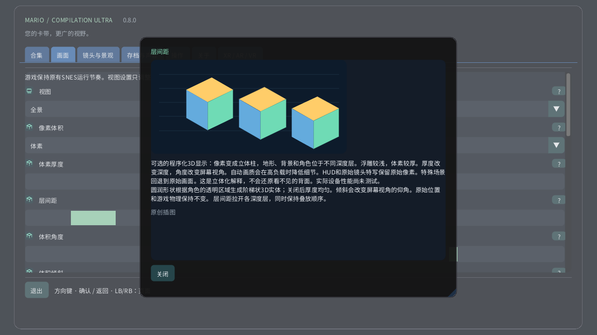

像素体积

在电脑或触屏设备上打开画面 → 像素体积。先试试深度较浅的像素浮雕，再切换到体素。厚度改变每个像素的实体厚度，间距拉开各层而不改变叠放顺序。在Quest上使用空间遥控器的立体页面。手表表冠仍可从完整区域缩放到原始画面。
- 0 · 原始2D
- 1 · 像素浮雕
- 2 · 体素
可选的程序化3D显示：像素变成立体柱，地形、背景和角色位于不同深度层。浮雕较浅，体素较厚。厚度改变深度，角度改变屏幕视角。自动画质会在高负载时降低细节。HUD和原始镜头特写保留原始像素。特殊场景回退到原始画面。这是立体化解释，不会还原看不见的背面。实际设备性能尚未测试。 圆润形状根据角色的透明区域生成阶梯状3D实体；关闭后厚度均匀。倾斜会改变屏幕视角的仰角。原始位置和游戏物理保持不变。 层间距拉开各深度层，同时保持叠放顺序。
图解设置
- 体素厚度
- 1–16 px
- 层间距
- 1–12 px
- 体积角度
- −30° … +30°
- 体积倾斜
- −30° … +30°
- 圆润体素形状
